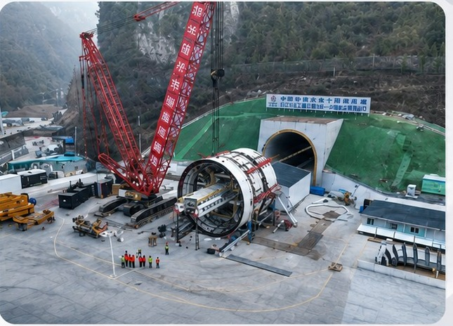

Bid Section 5-1 of the Yinjiang–Buhan Water Diversion Project drives 12.1 km of water conveyance and return water tunnel with a single-shield TBM at 12.23 m excavation diameter. The alignment runs from K8+360 to K21+630 through ground characterised by high geostress, high water pressure and high rock strength — conditions that put sustained demand on the shield's sealing and lubrication systems. CENTOR supplies tail grease and TBM lubrication support across the drive.
| Section | Length |
|---|---|
| TBM72-2 | 2.562 km |
| 5A Construction Section | 4.642 km |
| 5B Construction Section | 3.058 km |
| 5C Construction Section | 0.101 km |
| 5D Construction Section | 2.899 km |
| Total | 12.1 km |
High geostress, high water pressure and high rock strength; faults, groundwater and soft-rock deformation are the key risks.
Contact us to discuss how CENTOR products and engineering support can be specified on your next underground project.